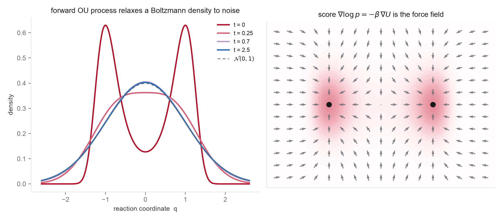

- Itô SDEs and the Fokker-Planck (forward Kolmogorov) equation
- The Ornstein-Uhlenbeck process and its Gaussian transition kernel
- Gaussian score \(\nabla_x\log\mathcal N(x;\mu,\Sigma)\)
- The continuity equation from Week 1, Section 4
- Conditional expectation as the minimizer of squared error
- Yang Song's blog for the SDE and probability-flow ODE picture end to end
- Song et al. (Score SDE), Sections 3 and 4 and Appendix D for the reverse SDE and the probability-flow ODE
- DDPM for the closed-form forward marginal and \(\epsilon\)-prediction
- Week 1 Problem 1 for the Gaussian-smoothing score you reuse here
This problem builds the entire reverse-diffusion toolkit in one pass. We try to stay anchored to a physical picture to help with intuition. Take the data distribution to be a Boltzmann distribution over molecular configurations \(x\in\mathbb R^d\) at physical inverse temperature \(\beta_{\mathrm{phys}}=1/k_BT_{\mathrm{phys}}\),
with \(U\) a potential energy. You will run an artificial noising process that turns this distribution into a reference Gaussian, derive the two ways to reverse it, and show that the object both reversals require, the score, is learnable by regression and, at zero noise, is the physical force. Keep two notions of "temperature" apart throughout: \(\beta_{\mathrm{phys}}\) and \(U\) are physics, while the diffusion time \(t\) and noise scale \(\sigma\) are a corruption schedule you choose, not a thermodynamic temperature.
Units and conventions. Treat coordinates as nondimensionalized (or replace \(I\) with a reference covariance carrying units). Then \(x,\sigma,\sigma_{\mathrm{data}},c_{\mathrm{out}}\) carry length, \(c_{\mathrm{in}}\) inverse length, \(c_{\mathrm{skip}}\) is dimensionless, the score \(\nabla_x\log p\) carries inverse length, and \(k_BT_{\mathrm{phys}}\,\nabla_x\log p\) carries force. Reserve \(t,\sigma\) for the diffusion process and \(\beta_{\mathrm{phys}},T_{\mathrm{phys}}\) for thermodynamics; the two are unrelated.
Warm-up (optional, recommended). Do everything in closed form first for a harmonic landscape \(U(x)=\tfrac12 x^\top K x\), so \(p_{\mathrm{data}}=\mathcal N(0,\Sigma)\) with \(\Sigma=k_BT_{\mathrm{phys}}\,K^{+}\) (the pseudoinverse absorbs rigid zero modes). Under variance-exploding noising \(x_\sigma=x_0+\sigma\epsilon\), show \(p_\sigma=\mathcal N(0,\Sigma+\sigma^2 I)\), hence the exact score \(s_\sigma(x)=-(\Sigma+\sigma^2 I)^{-1}x\) and exact denoiser \(D^\star(x,\sigma)=\Sigma(\Sigma+\sigma^2 I)^{-1}x\). Every numbered part below is the nonlinear generalization of this one example, and Problem 2 reuses its eigenmode structure directly.

- Forward process and perturbation kernel. Consider the variance-preserving (Ornstein-Uhlenbeck) forward SDE \(\mathrm dx = -\tfrac12\beta(t)\,x\,\mathrm dt + \sqrt{\beta(t)}\,\mathrm dw\), where \(\beta(t)\) is a schedule rate, not a temperature. Show that the transition kernel is Gaussian, \(p_{0t}(x_t\mid x_0)=\mathcal N\big(x_t;\sqrt{\bar\alpha_t}\,x_0,\,(1-\bar\alpha_t)I\big)\), and give \(\bar\alpha_t\) in terms of \(\int_0^t\beta(s)\,\mathrm ds\). Confirm that as \(t\to\infty\) the marginal forgets \(x_0\) and tends to \(\mathcal N(0,I)\) regardless of how rugged \(U\) was. Interpret this as an artificial Gaussianization that progressively erases molecular structure toward a chosen reference Gaussian. It is not physical heating under \(U\), and the endpoint is not an ideal gas: ideal-gas positions are uniform in a finite box and are not even normalizable over unbounded space.
- The marginal score is a smoothed force. Writing \(p_t(x)=\int p_{0t}(x\mid x_0)\,p_{\mathrm{data}}(x_0)\,\mathrm dx_0\), show that the perturbation kernel makes \(p_t\) a Gaussian-smoothed (and rescaled) version of the data, and reuse the Week 1 smoothing identity to write \(\nabla_x\log p_t(x)\) as a softmax-weighted average of displacements toward rescaled data points. This is the continuum of the empirical-measure smoothing from Week 1 Problem 1.
- Reverse-time SDE. State Anderson's result: the reverse of \(\mathrm dx = f(x,t)\,\mathrm dt + g(t)\,\mathrm dw\) is \(\mathrm dx = [f(x,t)-g(t)^2\nabla_x\log p_t(x)]\,\mathrm dt + g(t)\,\mathrm d\bar w\) with \(\mathrm dt<0\). To avoid the most common sign error, change to positive reverse time \(\tau=T-t\) and let \(\widetilde p_\tau(x)=p_{T-\tau}(x)\); then verify the construction by showing that \(\widetilde p_\tau\) satisfies the Fokker-Planck equation of the reverse process, so the forward and reverse SDEs share every marginal \(p_t\). (The drift correction \(-g^2\nabla\log p_t\) is exactly what reverses the sign of the probability current.)
- Probability-flow ODE. Show that the deterministic ODE \(\dfrac{\mathrm dx}{\mathrm dt}=f(x,t)-\tfrac12 g(t)^2\nabla_x\log p_t(x)\) has the same marginals \(p_t\) as the forward SDE, by writing the Fokker-Planck equation as a continuity equation \(\partial_t p_t + \nabla\!\cdot(p_t v_t)=0\) and reading off the velocity \(v_t\). Connect this back to Week 1: the probability-flow ODE is an ordinary flow whose velocity is built from the score, so the instantaneous change-of-variables formula gives exact likelihoods. Stress what it is not: this trajectory is an artificial probability-transport path, not a molecular-dynamics trajectory, a reaction pathway, or a minimum-energy path. The reverse SDE and this ODE share every one-time marginal but have entirely different path laws.
- Denoising score matching. The explicit objective \(\mathbb E_{p_t}\|s_\theta(x,t)-\nabla\log p_t(x)\|^2\) needs the unknown \(\nabla\log p_t\). Show it is equivalent, up to a constant independent of \(\theta\), to the denoising objective \[ \mathcal L(\theta)=\mathbb E_{t}\,\mathbb E_{x_0}\,\mathbb E_{x_t\sim p_{0t}(\cdot\mid x_0)}\Big\|s_\theta(x_t,t)-\nabla_{x_t}\log p_{0t}(x_t\mid x_0)\Big\|^2, \] and evaluate the per-sample target for the Gaussian kernel of part 1 to get \(\nabla_{x_t}\log p_{0t}(x_t\mid x_0) = -\,\dfrac{x_t-\sqrt{\bar\alpha_t}\,x_0}{1-\bar\alpha_t} = -\dfrac{\epsilon}{\sqrt{1-\bar\alpha_t}}\). Give the clean proof of equivalence rather than a long expansion: set \(Y=\nabla_{x_t}\log p_{0t}(x_t\mid x_0)\), note that the minimizer of a squared error is the conditional mean, so \(\mathbb E[Y\mid x_t]=\nabla_{x_t}\log p_t(x_t)\), and the bias-variance decomposition makes the two objectives differ by a \(\theta\)-independent constant. Conclude \(s_\theta^\star(x,t)=\nabla_x\log p_t(x)\).
- The score is a force, with one qualification. For full Cartesian coordinates at \(t=0\), show \(\nabla_x\log p_{\mathrm{data}}(x) = -\beta_{\mathrm{phys}}\nabla_x U(x)=\beta_{\mathrm{phys}}F(x)\), exactly the physical force over \(k_BT_{\mathrm{phys}}\), with the partition function \(Z\) gone. Explain in a sentence why this is precisely why score-based methods sidestep the intractable normalizer. Then state the caveat: for a reduced or collective coordinate \(q\), \(p(q)\propto e^{-\beta_{\mathrm{phys}}A(q)}\) where \(A\) is a free energy / potential of mean force, so \(k_BT_{\mathrm{phys}}\nabla_q\log p(q)\) is a mean force carrying entropic and coordinate-Jacobian contributions, not the microscopic atomic force. For \(t>0\), define the effective landscape \(A_t^{\mathrm{eff}}(x)=-k_BT_{\mathrm{phys}}\log p_t(x)+C_t\), so that \(k_BT_{\mathrm{phys}}\nabla\log p_t = -\nabla A_t^{\mathrm{eff}}\): an exact effective force in the artificial noised coordinate space, not a force of the original Hamiltonian. Finally, do not assume noise simply "flattens barriers"; measure the effective barrier between the two wells of the figure as a function of \(\sigma\) and report whether smoothing lowers, shifts, or merges them.
- Three parameterizations, and the VP/VE bridge. Show that predicting the noise \(\epsilon\), predicting the clean sample \(x_0\) (the denoiser \(D_\theta\)), and predicting the score \(s_\theta\) are linear reparameterizations of one another, related by Tweedie's formula \(\mathbb E[x_0\mid x_t]=\tfrac{1}{\sqrt{\bar\alpha_t}}\big(x_t+(1-\bar\alpha_t)\nabla\log p_t(x_t)\big)\). Be precise about what is learned: \(\epsilon\)-prediction targets \(\mathbb E[\epsilon\mid x_t]\) and \(x_0\)-prediction targets \(\mathbb E[x_0\mid x_t]\); neither recovers the particular injected noise or clean sample, only its conditional mean. Then bridge the VP convention used here to the variance-exploding convention \(y=x_0+\sigma\epsilon\) of Problem 2 by the rescaling \(y_t=x_t/\sqrt{\bar\alpha_t}=x_0+\sigma_t\epsilon\) with \(\sigma_t^2=(1-\bar\alpha_t)/\bar\alpha_t\), so Problem 2 is not a new model but the same one in different coordinates. State which target EDM trains and why a denoiser is better conditioned across noise levels.